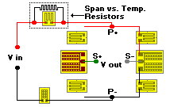

Span Shift with Temperature Change
Span Shift with Temperature ChangeSpan Shift with Temperature, 3 Points
Circuit Refinements command
General Considerations
Span Shift with Temperature Change
Span Shift Compensation techniques
Span shift with temperature change, two points is a first order correction. Span shift with temperature change three point is the next refinement and is designed to remove any nonlinearities in the span vs. temperature compensation process by shunting the Rmod resistor with a fixed value (low TCR) resistor.
Inputs
 Span at High, Ambient & Low Temperature
Span at High, Ambient & Low Temperature
Three measured values from the transducer under test are entered at three test temperatures. The actual temperatures used are not critical providing that the temperatures are separated by a reasonable amount. For example, a transducer that is designed to operate over a 0�F to 120�F temperature range would typically be tested at 0�F, 75�F and 120�F to obtain the best accuracy of compensation.
The bridge output entered at each temperature is the measured output at the test load minus the bridge zero output at the same temperature. Span measurement should not be done with Rmod and Rspan resistors in the circuit. If these resistors are already wired into the bridge circuit, they can be temporarily disabled by shorting across their terminals.
Rbridge
The bridge resistance value measured at P+ and P-. The measurement should not include span set or span shift with temperature change resistors.
Rtl, Rta, Rth
These are resistor values (or resistance ratios relative to the ambient temperature value) of an Rmod resistor (bondable or wire type) installed on the transducer or sample of the transducer material. They are measured or computed from measurements taken at the same three temperatures as used for Span and Rbridge inputs.
For best accuracy, Rtl, Rta and Rth values are obtained by testing a sample of the intended Rmod resistor material on an actual spring element, since TCR is sensitive to both lot and installation (i.e., bondable resistors mounted on steel alloys will exhibit different TCR values than the same resistors mounted on aluminum alloys). Since the TransCalc computation compares the relative change in ambient temperature resistor value to low and high temperature values, the actual ambient temperature value of the test resistor is not critical.
Rtl, Rta and Rth have already been computed for Measurements Group bondable resistors of copper, nickel and Balco alloys mounted on steel and aluminum alloy transducer materials. To access this calculator, select the auxiliary program Resistance Ratios.
Solutions
 Rshunt
Rshunt
The value of fixed resistance to be placed in parallel with Rmod to achieve the desired linearity correction of span vs. temperature. This resistor does not need to have an extremely low TCR. A wire or metal film resistor of perhaps 0-50 ppm/�C will be sufficient.

Rmod
This is the ambient temperature value of the suggested modulus resistor, produced from the same material as was used to measure Rtl, Rta and Rth.
Some transducers, due to the nature of their use, require that the span vs. temperature resistors be equally divided between the P+ and P- power supply leads. In these cases the Rspan and Rmod should be divided by 2 and these values placed in each of the two power leads.
Span
The calculated transducer output after the addition of Rmod and Rshunt.
 Compensation Impracticable
Compensation Impracticable
This error message, should it arise, means that there is no combination of Rmod and Rshunt which will result in linear span vs. temperature compensation. It typically results from excessive nonlinearity in either resistor TCR or transducer span shift with temperature change.
When this error message is displayed a solution can be attempted by using a different resistor alloy (each alloy has slightly different resistance vs. temperature characteristics). If this doesn�t help we suggest looking for external influences on span vs. temperature results. A good example is a protective coating on the spring element. Many coatings stiffen significantly at cold temperatures but soften at high temperatures. Such changes often influence the transducer span to a degree that outputs are impossible to linearize.
If it is not possible to obtain a solution using span shift with temperature change, 3 points, we suggest trying the Optimum Shunt calculation because it has a larger tolerance for nonlinear behavior.